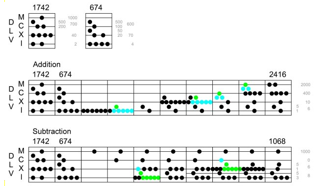

Don't interrupt, Bruno said as we came in. I'm counting the Pigs in the field!
How many are there? I enquired.
About a thousand and four, said Bruno.
You mean about a thousand, Sylvie corrected him. There's no good saying "and four": you can't be sure about the four!
And you're as wrong as ever! Bruno exclaimed triumphantly. It's just the four I can be sure about; cause they're here, grubbing under the window! It is the thousand I isn't pruffickly sure about
Arithmetics is the study of numbers, especially the properties of the traditional operations on them.
Some mathematicians are of the opinion that the doing of mathematics is closer to discovery than invention.
The number 210, a primorial, is the smallest number divisible by the smallest 4 primes (2, 3, 5, 7) and has 16 divisors (1, 2, 3, 5, 6, 7, 10, 14, 15, 21, 30, 35, 42, 70, 105, 210).
Greatest Common Divisor
A divisor of two positive integers that is the largest positive integer that divides both numbers without remainder. It is useful for reducing fractions to be in its lowest terms. You can find the GCD by performing repeated division starting from the two numbers we want to find the GCD of until we get a remainder of 0.
- 64 ÷ 40 = 1 with a remainder of 24
- 40 ÷ 24 = 1 with a remainder of 16
- 24 ÷ 16 = 1 with a remainder of 8
- 16 ÷ 8 = 2 with a remainder of 0.
We stop here since we've already got a remainder of 0. The last number we used to divide is 8 so the GCD of 40 and 64 is 8.
Least Common Multiple
A multiple of two integers that is the smallest integer that is a multiple of both numbers. For two positive integers, the properties of their GCD and LCM come in pairs; the phenomenon is explained by the formula gcd(a, b) × lcm(a, b) = a × b.

Binary numbers are a base 2 numeral system.
A binary number is a number expressed in the base-2 numeral system, which uses only two symbols: 0 and 1. Each digit is referred to as a bit. Because of its straightforward implementation in digital electronic circuitry using logic gates, the binary system is used by almost all modern computers and computer-based devices.
- Bit: The smallest unit in computers. It is either a 1 or a 0.
- Nibble: Half a byte, or 4 bits.
- Byte: 8 bits together form one byte, a number from 0 to 255. Bits in a byte are numbered starting from the right at 0.
- Short: Two bytes put together are 16 bits, forming a number from 0 to 65535. The low byte is the rightmost eight bits.
- Big Endian: Stores data big-end first. When looking at multiple bytes, the first byte (lowest address) is the biggest.
- Little Endian: Stores data little-end first. When looking at multiple bytes, the first byte is smallest.
Conversion
Break down the binary value in chunks of 4, multiply each 1 by its equivalent value, either 8, 4, 2 or 1. Add the resulting numbers together to get the result. For example, the value 1100, or (8*1 + 4*1), is equal to C(decimal 12).
1101 0101(D5) | ||||||||
|---|---|---|---|---|---|---|---|---|
| 1 | 1 | 0 | 1 | 0 | 1 | 0 | 1 | Binary |
| 128 | 64 | 32 | 16 | 8 | 4 | 2 | 1 | Values |
| 128 | 64 | 16 | 4 | 1 | Result: 213 | |||
Binary Arithmetic
In the first column, divide the first number by 2 by removing the last bit, until 1 is reached. In the second column, multiply by 2 by adding an extra bit of 0. The answer is found by adding the numbers in the second column with odd numbers in the first column. A binary number ending with 1 is odd.
| 35 | 19 |
|---|---|
100011 | 10011 |
10001 | 100110 |
1000 | 1001100 |
100 | 10011000 |
10 | 100110000 |
1 | 1001100000 |
1010011001 |
This example multiplies 35 by 19, to arrive at a result of 665. The result 1010011001 can be deconstucted as:
10 1001 1001 = 1 + 8 + 16 + 128 + 512 = 665
Binary numbers can be multiplied and divided by multiples of 2, by rotating one bit left to multiply by 2, or one bit right to divide by 2.
| 22 | 0 | 0 | 0 | 1 | 0 | 1 | 1 | 0 | |
|---|---|---|---|---|---|---|---|---|---|
| 44 | ROL | 0 | 0 | 1 | 0 | 1 | 1 | 0 | 0 |
| 11 | ROR | 0 | 0 | 0 | 0 | 1 | 0 | 1 | 1 |
AND, or "both", sets individual bits to 0. AND is useful for masking bits, for example, to mask the high order bits of a value AND with $0F: $36 AND $0F = $06. ORA(OR), or "either one or both", sets individual bits to 1. OR is useful for setting a particular bit, for example, $80 OR $08 = $88. EOR(XOR), or "one or the other but not both", inverts individual bits.
| input | output | AND | ORA | EOR |
| 0 | 1 | 0 | 1 | 1 |
| 0 | 0 | 0 | 0 | 0 |
| 1 | 1 | 1 | 1 | 0 |
| 1 | 0 | 0 | 1 | 1 |
To activate the 1st, 2nd and 4th bits:
| 0 | 0 | 0 | 0 | 1 | 0 | 1 | 1 |
unsigned char num = 0; num |= (1 << 0); num |= (1 << 1); num |= (1 << 3);
To deactivate the 1st, 4th and 6th bits:
| 1 | 1 | 0 | 1 | 0 | 1 | 1 | 0 |
unsigned char num = 255; num &= ~(1 << 0); num &= ~(1 << 3); num &= ~(1 << 5);
To read value of bit:
(num >> bit) & 1;
If Bit 7 is not set (as in the first example) the representation of signed and unsigned numbers is the same. However, when Bit 7 is set, the number is always negative. For this reason Bit 7 is sometimes called the sign bit.
| Binary | Unsigned | Signed |
| 0010 0011 | 35 | 35 |
| 1010 0011 | 163 | -93 |
| 1111 1111 | 255 | -1 |
| 1000 0000 | 128 | -128 |
A fixed-point number is a number that has a fixed number of digits after the decimal point. If, for example, we use 8 bits to store a number with decimal points, we could decide to store it this way. The high and low nibbles have the same resolution.
| Integer Part | Decimal Points | |||||||
|---|---|---|---|---|---|---|---|---|
| 0 | 0 | 0 | 0 | 0 | 0 | 0 | 0 | 0.0 |
| 0 | 0 | 1 | 1 | 1 | 0 | 1 | 0 | 3.a |
| 0 | 1 | 0 | 0 | 0 | 1 | 0 | 1 | 4.5 |
To turn a regular integer into fixed point, shift left by the number of fractional bits(width << bits), and to turn a fixed point into integer, shift right by the number of fractional bits(width >> bits).
To multiply, you do the multiply, and then you shift right by the number of fractional bits.
(3.8 * 2.0) >> 8
To divide, you first shift the numerator left by the number of fractional bits, then you do the division.
(3.8 << 8) / 2.0

Binary Stack Encoding
A stack of zeros and ones can be encoded in a single number by keeping with bit-shifting and incrementing.
- Pushing a 0 onto the stack is equivalent to doubling the number.
- Pushing a 1 is equivalent to doubling and adding 1.
- Popping is equivalent to dividing by 2, where the remainder is the number.
int
push(int stack, int bit) {
return (stack << 1) + bit;
}
int
pop(int stack, int *acc) {
*acc = stack & 0x1;
return stack >> 1;
}
int
dup(int stack) {
int a, res = pop(stack, &a);
return push(push(res, a), a);
}
int
swap(int stack) {
int a, b, res = pop(pop(stack, &a), &b);
return push(push(res, a), b);
}
int
echo(int stack) {
int bit;
printf(" .. ");
while(stack > 1)
stack = pop(stack, &bit), printf("%d ", bit);
printf("< \n");
return stack;
}
The above defines the primitives of a small stack machine that utilizes a single number as memory, this strategy is at the core of the Fractran stack machine.
echo(dup(swap(push(push(push(push(1, 0), 1), 0), 1)))); 0 1 0 1 swap dup .
| 16 | .. 0 0 0 0 | 17 | .. 1 0 0 0 |
|---|---|---|---|
| 24 | .. 0 0 0 1 | 25 | .. 1 0 0 1 |
| 20 | .. 0 0 1 0 | 21 | .. 1 0 1 0 |
| 28 | .. 0 0 1 1 | 29 | .. 1 0 1 1 |
| 18 | .. 0 1 0 0 | 19 | .. 1 1 0 0 |
| 26 | .. 0 1 0 1 | 27 | .. 1 1 0 1 |
| 22 | .. 0 1 1 0 | 23 | .. 1 1 1 0 |
| 30 | .. 0 1 1 1 | 31 | .. 1 1 1 1 |
Ternary numbers are a base 3 numeral system.
Base 10 is famously well suited to those of us who count on our fingers. Base 2 dominates computing technology because binary devices are simple and reliable, with just two stable states on or off. The cultural preference for base 10 and the engineering advantages of base 2 have nothing to do with any intrinsic properties of the decimal and binary numbering systems.
Base 3, on the other hand, does have a genuine mathematical distinction in its favor. By one plausible measure, it is the most efficient of all integer bases; it offers the most economical way of representing numbers as it is closer than binary to the most economical radix base(2.718) to represent arbitrary numbers, when economy is measured as the product of the radix and the number of digits needed to express a given range of values.
| Truth value | Unsigned trit | Balanced trit |
|---|---|---|
| false | 0 | - |
| unknown | 1 | 0 |
| truth | 2 | + |

Balanced Ternary
The digits of a balanced ternary numeral are coefficients of powers of 3, but instead of coming from the set {0, 1, 2}, the digits are {-, 0 and +}. They are balanced because they are arranged symmetrically about zero.
| Unsigned | Balanced | ||
|---|---|---|---|
| Dec. | Tern. | Tern. | Dec. |
| 0 | 00 | -- | -4 |
| 1 | 01 | -0 | -3 |
| 2 | 02 | -+ | -2 |
| 3 | 10 | 0- | -1 |
| 4 | 11 | 00 | 0 |
| 5 | 12 | 0+ | 1 |
| 6 | 20 | +- | 2 |
| 7 | 21 | +0 | 3 |
| 8 | 22 | ++ | 4 |
Arithmetic is nearly as simple as it is with binary numbers; in particular, the multiplication table is trivial. Addition and subtraction are essentially the same operation: Just negate one number and then add. Negation itself is also effortless: Change every N into a 1, and vice versa. Rounding is mere truncation: Setting the least-significant trits to 0 automatically rounds to the closest power of 3.
Encoding
Five trits can be stored in a byte by using modulo and division, this technique can store 243 possible values in a byte:
(n % 3) + '0', n /= 3;
If the number is encoded first into something like a float, it makes unpacking possible without division:
uint8_t q = (((uint16_t) i) * 256 + (243 - 1)) / 243;
for (int j = 0; j < 5; ++j) {
uint16_t m = q * 3;
s2[j] = (m >> 8) + '0';
q = m & 0xFF;
}
Perhaps the prettiest number system of all is the balanced ternary notation.Donald E. Knuth, The Art of Computer Programming

Decimal numbers are a base 10 numeral system.
In Roman calculation, stones are placed on lines representing units, tens, hundreds and thousands. The spaces between the lines are used to represent intermediate values that is 5, 50, 500.
Carrying: So it is never necessary to use more than 5 stones on a line or more than 2 stones in a space. This is because 5 stones on a line can be replaced by one stone in the space above and 2 stones in a space can be replaced by one stone on the line above.
Borrowing: Or the reverse a stone in a space can be replaced by 5 stones on the line below or one stone on a line can be replaced by two stones in the space below. Zero is simply represented by an empty line or space.
Hexdecimal numbers are a base 16 numeral system.
Hexadecimal numerals are widely used by computer system designers and programmers because they provide a human-friendly representation of binary-coded values. Each hexadecimal digit represents four bits.

Finger Counting
Finger binary is a system for counting and displaying binary numbers on the fingers of one or more hands. It is possible to count from 0 to 31 using the fingers of a single hand. In the binary number system, each numerical digit has two possible states(0 or 1) and each successive digit represents an increasing power of two.
| Pinky | Ring | Middle | Index | Thumb | |
|---|---|---|---|---|---|
| Value | 1 | 2 | 4 | 8 | 16 |
For example, the number 10 is expressed by folding the index and ring finger, the number 20 is expressed by folding the thumb and the middle finger.

A way to look at this system is to consider the hand as an abacus, where the little finger has a value of 1, the ring finger has a value of 2, the middle finger has a value of 4, and the index has a value of 8. Numbers are made by adding the value of the pointed fingers.
Verbal Counting
| A | ha | 1A | hateen | A0 | haty | A00 | handred |
|---|---|---|---|---|---|---|---|
| B | be | 1B | beteen | B0 | bety | B00 | bendred |
| C | ce | 1C | ceteen | C0 | cety | C00 | cendred |
| D | de | 1D | deteen | D0 | dety | D00 | dendred |
| E | he | 1E | heteen | E0 | hety | E00 | hendred |
| F | fe | 1F | feteen | F0 | fety | F00 | fendred |
Hexadecimal to Binary Table
You can find a larger table, the midi table and the ascii table.
| 0 | 0000 | 4 | 0100 | 8 | 1000 | C | 1100 |
| 1 | 0001 | 5 | 0101 | 9 | 1001 | D | 1101 |
| 2 | 0010 | 6 | 0110 | A | 1010 | E | 1110 |
| 3 | 0011 | 7 | 0111 | B | 1011 | F | 1111 |
Triplets of ternary digits are encoded in heptavintimal numbers.
There is a need for an encoding akin to hexdecimal for ternary computers. Heptavintimal meets this need, offering a natural encoding for 3-trit trybbles in base 27, or septemvigesimal. It is especially useful for encoding scheme such as TerSCII.

The name heptavintimal is composed of the Greek prefix hepta, meaning seven, followed by the Latin root vinti meaning twenty, with the suffix mal added, to indicate that it is a number base. The mixing of Greek and Latin exactly follows the formation of the word hexadecimal, where the prefix hexi comes from Greek and the root deci is from the Latin.
| Bal | -13 | -12 | -11 | -10 | -9 | -8 | -7 | -6 | -5 | -4 | -3 | -2 | -1 | 0 | 1 | 2 | 3 | 4 | 5 | 6 | 7 | 8 | 9 | 10 | 11 | 12 | 13 |
|---|---|---|---|---|---|---|---|---|---|---|---|---|---|---|---|---|---|---|---|---|---|---|---|---|---|---|---|
| --- | --0 | --+ | -0- | -00 | -0+ | -+- | -+0 | -++ | 0-- | 0-0 | 0-+ | 00- | 000 | 00+ | 0+- | 0+0 | 0++ | +-- | +-0 | +-+ | +0- | +00 | +0+ | ++- | ++0 | +++ | |
| Hept | 0 | A | B | C | D | E | F | G | H | I | J | K | L | M | N | O | P | Q | R | S | T | U | V | W | X | Y | Z |
| Uns | 000 | 001 | 002 | 010 | 011 | 012 | 020 | 021 | 022 | 100 | 101 | 102 | 110 | 111 | 112 | 120 | 121 | 122 | 200 | 201 | 202 | 210 | 211 | 212 | 220 | 221 | 222 |
| 0 | 1 | 2 | 3 | 4 | 5 | 6 | 7 | 8 | 9 | 10 | 11 | 12 | 13 | 14 | 15 | 16 | 17 | 18 | 19 | 20 | 21 | 22 | 23 | 24 | 25 | 26 | |
| 3's | 0 | 1 | 2 | 3 | 4 | 5 | 6 | 7 | 8 | 9 | 10 | 11 | 12 | 13 | -13 | -12 | -11 | -10 | -9 | -8 | -7 | -6 | -5 | -4 | -3 | -2 | -1 |
The layout used here differs from Douglas W. Jones' proposal which requires a large LUT to render the notation, this one relies on the fact that the 27 characters needed for the system conveniently fits by simply adding a zero at the start of the roman alphabet.
| Decimal | Ternary | Nonary | Hept |
|---|---|---|---|
| 1 | 1 | 1 | A |
| 2 | 2 | 2 | B |
| 4 | 11 | 4 | D |
| 8 | 22 | 8 | H |
| 16 | 121 | 17 | P |
| 32 | 1012 | 35 | AE |
| 64 | 2101 | 71 | BJ |
| 128 | 11202 | 152 | DT |
| 256 | 100111 | 314 | IM |
| 512 | 200222 | 628 | RZ |
| 1024 | 1101221 | 1412 | AJY |

To convert and print the heptavintimal digits of 5 trybbles from a decimal integer stored in a 16-bit address space where each trit takes 2 bits:
typedef uint32_t trint16_t;
int
ter2bin(trint16_t t)
{
int sft = 1, acc = 0;
while(t)
acc += sft * (t & 0x3), t >>= 2, sft *= 3;
return acc;
}
trint16_t
bin2ter(int n)
{
trint16_t sft = 0, acc = 0;
while(n > 0)
acc |= (n % 3) << sft, n /= 3, sft += 2;
return acc;
}
trint16_t
hep2ter(char *str)
{
char c;
trint16_t acc = 0;
while((c = *str++))
acc <<= 6, acc |= bin2ter(c ? (c - 'A') + 1 : 0);
return acc;
}
void
print_heptavintimal(trint16_t n)
{
int i;
for(i = 4; i > -1; --i) {
int t = ter2bin((n >> (i * 6)) & 0x3f);
putchar(t ? '@' + t : '0');
}
}
// heptavintimal to decimal
printf("%d", ter2bin(hep2ter("AJY")));
// decimal to heptavintimal
print_heptavintimal(bin2ter(1024));
A prime number cannot be divided by any other number, apart from itself and one.

To find the prime factorization of a number, start by dividing the number by the first prime number 2 and continue dividing by 2 until you get a decimal or remainder. Then divide by 3, 5, 7, etc. until the only numbers left are prime numbers.
| Number | Primes | ||
|---|---|---|---|
| 2 | 3 | 5 | |
| 6 | 1 | 1 | 0 |
| 375 | 0 | 1 | 3 |
| 2250 | 1 | 2 | 3 |
Multiplying two numbers is the same as adding the counts of each prime
factors, and division is the same as subtracting the counts. For example, using
numbers made up of the 3 first primes(2, 3, 5), 2250 is equal to 2^1 x
3^2 x 5^3.
Using prime factorization, one can find the GCD and LCM of two numbers.
- 48 = 2 × 2 × 2 × 2 × 3
- 180 = 2 × 2 × 3 × 3 × 5
- Least common multiple = 2 × 2 × 2 × 2 × 3 × 3 × 5 = 720
- Greatest common divisor = 2 × 2 × 3 = 12
- Product = 720 × 12 = 8640

An interesting part of primes is the ability to encode data, values can be encoded as exponents to a number's prime factors, or as values to registers as in Fractran. For example, the letters of the word "HELLO" can be stored as ascii exponents to the first five primes:
| H | E | L | L | O |
| 2^72 | 3^69 | 5^76 | 7^76 | 11^79 |
The resulting number storing the values of each character of "HELLO":
1639531486723067852359816964623169016543137549 4122401687192804219102815235735638642399170444 5066082282398711507312101674742952521828622795 1778467808618104090241918575825850806280956250 0000000000000000000000000000000000000000000000 0000000000000000000000000
Extra letters can be appended by multiplying with a number reducible with the
following prime, for example * 13^33 would make our message
"HELLO!". Letters can also be removed by dividing by one of its factors, for
example / 3^69 would make our message "HLLO!".
A fraction represents a part of a whole.
A fraction consists of a numerator displayed above a line, and a denominator below.
- An proper fraction must be less than 1, like
3/4and7/12. - An improper fraction is more than 1, like
9/2and13/4. - A mixed fraction is a whole number and a portion less than 1 together, like
2 3/4. - A reciprocal is another fraction with the numerator and denominator exchanged, like
3/7for7/3.
An interesting aspect of fractions and prime factorization is that multiplying fractions is the same as adding the prime numerators and subtracting the prime denominators.
| Multiplication | ||
|---|---|---|
| 42 | 5 / 14 | 15 |
| 21 x 31 x 71 / 1 | 5+1 / 2-1 x 7-1 | 31 x 51 / 1 |
For example, multiplying 42 by 5/14 means incrementing the power of prime 5, and decrementing the power of primes 2 and 7 — For a result of 42. A division is simply the inversion of the effects of the numerator and denumerator.
| Division | ||
|---|---|---|
| 15 | 5 / 14 | 42 |
| 31 x 51 / 1 | 5-1 / 2+1 x 7+1 | 21 x 31 x 71 / 1 |

Addition/Subtraction
To add fractions containing unlike quantities , it is necessary to convert all amounts to like quantities.
1/4 + 1/3 1*3/4*3 + 1*4/3*4 3/12 + 4/12 = 7/12
The process for subtracting fractions is, in essence, the same as that of adding them: find a common denominator, and change each fraction to an equivalent fraction with the chosen common denominator.
Multiplication
To multiply fractions, multiply the numerators and multiply the denominators.
2/3 * 3/4 = 6/12
This particularity serves as the basis for the Fractran programming language, it is also of interest for reversible computation.
Reducing
Dividing the numerator and denominator of a fraction by the same non-zero number yields an equivalent fraction: if the numerator and the denominator of a fraction are both divisible by a number (called a factor) greater than 1, then the fraction can be reduced to an equivalent fraction with a smaller numerator and a smaller denominator.
Recursive Method
function gcd(a, b) if b = 0 return a else return gcd(b, a mod b)
Comparing
Comparing fractions with the same positive denominator yields the same result as comparing the numerators.
The line that separates the numerator and the denominator is called a vinculum, which is also the word used to describe ‘a connecting band of tissue, such as that attaching a flexor tendon to the bone of a finger or toe’.
In Postfix Notation, the operators follow their operands.
In Postfix calculators, no equals key is required to force computation to occur. To learn more about a programming language using Postfix at its core, see Forth.
Brackets and parentheses are unnecessary: the user merely performs calculations in the order that is required, letting the automatic stack store intermediate results on the fly for later use. Likewise, there is no requirement for the precedence rules required in infix notation.
| prefix notation | infix notation | postfix notation |
|---|---|---|
+ 1 * 2 3 |
1 + (2 * 3) |
1 2 3 * + |
For instance, one would write 3 4 + rather than 3 + 4. If there are multiple operations, operators are given immediately after their second operands. The expression written (5 + 10) * 3 in conventional notation would be written 10 5 + 3 * in reverse Polish notation.
| operation | 3 | 10 | 5 | + | * |
|---|---|---|---|---|---|
| stack | 3 | 10 | 5 | 15 | 45 |
| 3 | 10 | 3 | |||
| 3 |
The automatic stack permits the automatic storage of intermediate results for use later: this key feature is what permits Postfix calculators to easily evaluate expressions of arbitrary complexity: they do not have limits on the complexity of expression they can evaluate.
a = x - ywhere-means subtraction, a dyadic use of the symbola = -ywhere-means negative, a monadic use of the same symbol